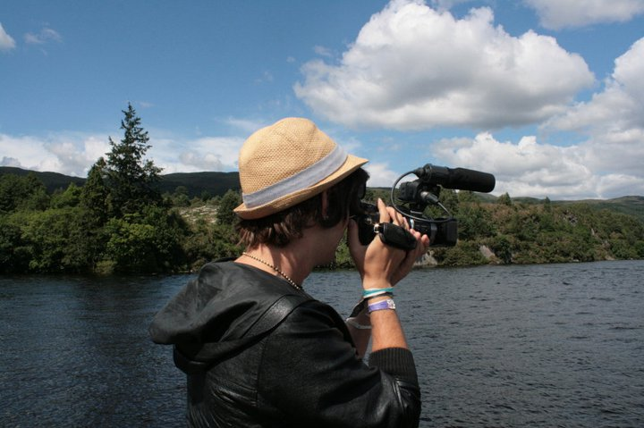

1. Download & Install
Head to Blackmagic Design, grab the free installer, and complete the setup. Launch Resolve and you’ll land on the Project Manager.
Install the optional training materials to get sample projects and LUTs.
By Carl Tomich | Last reviewed August 2, 2026 | Editorial policy
Ready to edit cinematic videos without paying a monthly subscription? In this comprehensive walkthrough, Carl Tomich shows you the exact workflow he recommends for first-time editors in DaVinci Resolve 2025,from installation and project setup to color grading, audio balancing, and final export.
Resolve is professional software that doesn’t gatekeep its best features behind a subscription. You get a full editing suite, industry-leading color tools, immersive audio mixing, and the Fusion VFX workspace in one download. The free version now even includes AI voice isolation, automatic subtitles, and better proxy workflows,features that used to be Studio-only.
All-in-One: Edit, color, mix audio, and add motion graphics without bouncing projects between apps.
Cross-Platform: Works the same on Windows, macOS, and Linux, so you can collaborate easily.
Low Barrier: Start with the free version and upgrade to Studio later for advanced FX, noise reduction, and cloud collaboration.
This page is for a first complete edit, not every advanced Resolve feature. The goal is to get footage imported, organised, cut, lightly graded, mixed, and exported without disappearing into tabs you do not need yet.
Start free. Add Studio once you need high-end noise cleanup, stereoscopic 3D, or multi-user collaboration.
Resolve is more demanding than iMovie or CapCut, but you can still run it on mid-range laptops by using optimized media:
Follow these eight foundational moves to complete your first DaVinci Resolve edit. Each section aligns with the video tutorial so you can scrub to the matching chapter when you need a visual reference.
Head to Blackmagic Design, grab the free installer, and complete the setup. Launch Resolve and you’ll land on the Project Manager.
Install the optional training materials to get sample projects and LUTs.
Click New Project, give it a clear name (e.g., “Travel Vlog 2025”), and set your timeline frame rate before hitting Create. Changing FPS later can cause audio sync issues, so decide now,24 fps for cinematic, 30/60 for YouTube.
In the Media page, right-click to import all footage, music, and graphics. Build bins such as A-Roll, B-Roll, Audio, and Graphics. Label your best takes with color tags and add notes so future-you knows what’s usable.
Good organization reduces clutter and keeps render cache files tidy.
Double-click a clip to open it in the Source Viewer. Use I and O for in/out, then drag the selection to the timeline. This trims before you place clips, keeping your timeline lean and easier to navigate.
Switch to the Color page and start with primary corrections: adjust Lift (shadows), Gamma (midtones), Gain (highlights), and Offset (overall balance). Apply a LUT for a baseline look, then tweak contrast, saturation, and temperature for natural skin tones.
Add a second node for creative stylization so you can toggle it on/off easily.
Balance dialogue between -6 dB and -3 dB, keep music around -18 dB, and use ducking to avoid competing frequencies. Resolve’s new AI Voice Isolation feature quickly removes background hum without touching EQ.
Short on time? Use the Mix inspector presets for quick level matching.
In the Deliver page, choose the YouTube 1080p preset, set the format to MP4 with the H.264 codec, and pick your render location. Click Add to Render Queue, then Start Render. For Instagram Reels, swap to the 1080x1920 preset.
Save custom presets for recurring clients so every export is consistent.
Absolutely. Resolve includes YouTube-ready presets, excellent color tools, and integrated subtitles. You can even upload directly to your channel after rendering.
If playback feels choppy, generate optimized media (proxies) and enable the Smart render cache. Lower the timeline resolution to 1/2 or 1/4 for editing, then switch back to full for final checks.
Not right away. The free version is feature-rich and rarely limits new creators. Upgrade when you need advanced noise reduction, 120 fps timelines, or cloud collaboration tools.
| Region | Gear |
|---|---|
| US | |
| Australia |
Disclosure: Some links are affiliate links, which means I may earn a small commission if you purchase through them at no extra cost to you.

Take the step-by-step video above, pause on each chapter, and build your first edit right alongside me. When you’re ready to go deeper, drop a comment with what you want to learn next,Fusion, audio mastering, or advanced color grading.
Travel Essential
Skip the SIM cards ✈️ , grab a Saily eSIM before your next trip and stay online from day one.
🎟 Use code CARLRI5370 for a discount
👉 Activate your eSIM now